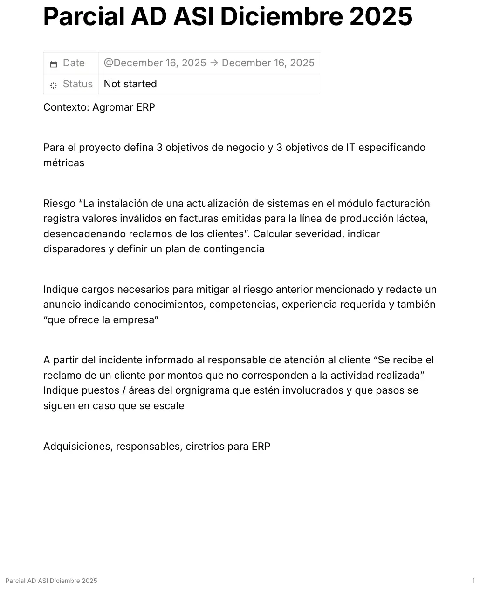

Aprobación directa, 16/12/2025
Aprobación directa, 16/12/2025
Enunciado


Propuesta de respuesta
Respuesta no verificada. La propuso Luta Studios con inteligencia artificial y ningún docente la revisó. Puede tener errores.
1. Objetivos con métricas
| Tipo | Objetivo | Métrica |
|---|---|---|
| Negocio | Bajar a la mitad los reclamos por facturación de la línea láctea en 12 meses | Reclamos por facturación por mes / facturas emitidas en el mes |
| Negocio | Reducir el cierre contable mensual de 5 a 2 días en el primer año | Días entre fin de mes y cierre aprobado |
| Negocio | Bajar un 10 % el stock inmovilizado de insumos en 12 meses | Valor promedio del stock de insumos sin movimiento en 90 días |
| TI | Que el 100 % de los procesos de producción, stock, ventas y facturación funcionen en el ERP, sin planillas paralelas, en 12 meses | Procesos operando en el ERP / procesos relevados × 100 |
| TI | Mantener una disponibilidad del ERP del 99,5 % mensual | Horas disponibles / horas del mes × 100 |
| TI | Que el 100 % de las actualizaciones del ERP pasen por prueba en un entorno separado y aprobación del CAB | Cambios con prueba aprobada / cambios instalados × 100 |
2. Riesgo dado
La instalación de una actualización de sistemas en el módulo facturación registra valores inválidos en facturas emitidas para la línea de producción láctea, desencadenando reclamos de los clientes.
Severidad.
| Factores | Valor | |
|---|---|---|
| Probabilidad | Frecuencia de amenazas con contacto periódico, porque el ERP se actualiza varias veces al año. Capacidad de resistencia baja si las actualizaciones no tienen pruebas de regresión del módulo de facturación | 3, moderado |
| Impacto | Costo, notas de crédito, refacturación y horas de atención. Productividad, Facturación y Atención al cliente dedicadas a corregir. Sensibilidad, la reputación con los clientes lácteos y la parte legal y fiscal de facturas con montos erróneos. Volumen, todas las facturas emitidas desde la actualización | 4, mayor |
Disparadores.
- Reclamos de clientes por montos que no corresponden.
- Diferencias entre lo facturado y lo entregado según los remitos de la línea láctea.
- Un control automático que detecta precios por litro fuera del rango de la lista vigente.
- Diferencias en la conciliación de cobranzas.
- Una actualización del módulo instalada hace poco, registrada en el historial de cambios.
Plan de contingencia.
- Registrar el incidente con prioridad alta y suspender la emisión automática de facturas de la línea láctea.
- Listar las facturas emitidas desde la actualización y compararlas con los remitos y la lista de precios.
- Volver a la versión anterior del módulo con un RFC de emergencia aprobado por el ECAB.
- Emitir notas de crédito y refacturar las facturas erróneas.
- Avisar a los clientes afectados desde Atención al cliente, con los montos correctos.
- Mientras se corrige, facturar con la versión anterior o con control manual de cada factura antes de enviarla.
3. Cargos y anuncio
Cargos para mitigar el riesgo.
| Cargo | Para qué |
|---|---|
| Analista QA del ERP (cluster Calidad de CESSI) | Pruebas de regresión del módulo de facturación antes de cada actualización |
| Gestor de Cambios | Coordinar el CAB y que ninguna actualización se instale sin prueba y aprobación |
| Analista funcional de facturación | Validar con el área las reglas de precios y los casos de prueba de la línea láctea |
Anuncio para Analista QA del ERP
¿Te gusta encontrar el error antes que el cliente?
Agromar S.A., empresa agropecuaria con producción agrícola y láctea, busca un Analista QA para asegurar la calidad de su ERP.
La posición. Diseñar y ejecutar las pruebas de cada actualización del ERP, sobre todo del módulo de facturación, en un entorno separado. Registrar los defectos y aprobar o frenar el pase a producción junto al Gestor de Cambios. Trabajo en la administración central, con visitas a los establecimientos.
Conocimientos. Excluyentes, pruebas funcionales y de regresión, consultas SQL y manejo de un ERP. Deseables, automatización de pruebas y facturación electrónica.
Competencias. Atención al detalle, pensamiento analítico, comunicación con usuarios no técnicos y trabajo en equipo.
Experiencia. Al menos 2 años en pruebas de software, mejor si fue con sistemas de gestión.
Qué ofrece la empresa. Relación de dependencia, cobertura médica, capacitación paga, modalidad híbrida y la posibilidad de crecer dentro del área de sistemas.
Cómo postularte. Enviá tu CV con la referencia «QA ERP» al área de Recursos Humanos de Agromar, antes del 30 del mes.
4. Incidente y escalado
Se recibe el reclamo de un cliente por montos que no corresponden a la actividad realizada.
Puestos y áreas involucrados. Atención al cliente, la mesa de ayuda de Sistemas, Facturación y Administración, el analista funcional del ERP, Desarrollo o el proveedor del ERP, el Gestor de Cambios y, para decidir, el Gerente de Sistemas y el de Administración.
| Paso | Quién | Qué hace |
|---|---|---|
| 1. Comunicación | Responsable de atención al cliente | Recibe el reclamo, toma los datos de la factura y lo informa a la mesa de ayuda |
| 2. Registro y clasificación | Mesa de ayuda, primera línea | Registra el incidente, busca otros reclamos iguales y le pone prioridad según cuántas facturas y clientes afecta |
| 3. Primera revisión | Mesa de ayuda con Facturación | Compara la factura con el remito y la lista de precios. Si fue un error de carga puntual, Facturación lo corrige y se cierra |
| 4. Escalado funcional | Analista funcional del ERP, segunda línea | Si el error viene del sistema, revisa los parámetros de precios y si hubo una actualización reciente |
| 5. Escalado funcional | Desarrollo o proveedor del ERP, tercera línea (contrato UC) | Corrige el software. La corrección o la vuelta atrás va por un RFC, de emergencia si urge |
| 6. Escalado jerárquico | Gerente de Sistemas y Gerente de Administración | Deciden suspender la facturación de la línea, emitir notas de crédito y cómo comunicarlo a los clientes |
| 7. Cierre | Mesa de ayuda y Atención al cliente | Confirman con el cliente, actualizan la KB y la CMDB y cierran. Si hubo varios reclamos, se abre un problema |
5. Adquisiciones para el ERP
| Adquisición | Responsables | Forma |
|---|---|---|
| Licencias o suscripción del ERP | Gerente de Sistemas, con Compras y Finanzas | RFI para conocer el mercado y RFP para elegir |
| Implementación, parametrización y migración de datos | Gerente de Sistemas, con los usuarios clave | Subcontratación a la consultora o al proveedor del ERP |
| Infraestructura (servidores o nube, red, puestos) | Responsable de Infraestructura | Compra, leasing o alquiler de nube, según el TCO |
| Capacitación de usuarios | Recursos Humanos con Sistemas | Incluida en el contrato o subcontratada |
| Soporte y mantenimiento | Gerente de Sistemas, con Legales | Contrato con SLA (UC) |
Participan también los usuarios clave de Administración, Facturación, Producción láctea y Agrícola, que definen los requerimientos, y Legales, que revisa el contrato.
| Criterios | Requisitos (excluyentes) | Diferenciadores |
|---|---|---|
| Funcionales | Facturación electrónica según la normativa fiscal, módulos de producción agropecuaria y láctea, stock, compras y contabilidad, perfiles de acceso por usuario | Integración con la plataforma de agricultura de precisión, reportes configurables, facilidad de uso |
| Técnicos | Base de datos con respaldos, entorno de prueba separado, integración con otros sistemas, seguridad y registros de auditoría | Disponibilidad en la nube, aplicación móvil para el campo |
| Del proveedor | Servicio técnico con tiempo de respuesta comprometido, garantía | Experiencia en el agro, certificaciones de calidad, capacitación incluida, costo de repuestos y de mantenimiento |
Las ofertas se comparan con una matriz de ponderación y con el costo total.
Respuesta no verificada. Puede tener errores.
Se armó con Objetivos SMART y de negocio y de TI del 1° parcial, FAIR y planes de la gestión de riesgos, armado del aviso con AIDA y perfiles CESSI del 2° parcial, escalado de incidentes del 2° parcial y la sección de Adquisiciones del 3° parcial (criterios, formas, mecanismos y TCO).
Quedó en duda: La hoja es un apunte corto de la consigna, no el enunciado completo, y el contexto «Agromar ERP» con su organigrama no está en la materia. Los cargos, las áreas y los beneficios del anuncio son supuestos. Las cifras de los objetivos son de ejemplo.
¿Cómo te fue?
Marcá cada tema del examen.
- ObjetivosObjetivos, en 1° parcial
- RiesgosRiesgos, en Final
- SelecciónSelección y entrevista, en 2° parcial
- IncidentesGestión de incidentes, en 2° parcial
- AdquisicionesAdquisiciones, en Aprobación directa